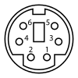

How I built a web-based remote control for an old set of speakers using an Arduino
For a while now, I've been wanting to poke my head down the electronics rabbit hole to see what's in there. For too long, I've been sitting high and mighty atop the software stack. It's time to get down off my perch and explore the wilds of the silicon jungle.
The problem
I have a set of very old Creative Inspire 5300 speakers. They're a cheap set of speakers that are almost 15 years old, but they're passable and still perfectly functional. At least, the speakers themselves are functional. The volume control, on the other hand, started breaking a long time ago. Something in there isn't making a good connection, so the speakers frequently turn off when you go to change the volume, and you have to rock the wheel back and forth to get them to turn back on again.
The easy solution of course, would be to crack open the volume control and fix the poor connection, but then I started thinking - what if I just build a new one? The volume control is a separate unit that plugs into the subwoofer, so I could swap it out for a new one easily, and while I'm at it, why not make a few improvements? Currently I have these speakers in the living room, where it's annoying to have to get up and walk across the room to change the volume. Wouldn't it be cool to have a replacement volume control that anyone in the room could operate from their phone?
So that's the goal: build an ethernet-connected volume control that allows anyone in the room to change the volume by visiting a web page on their phone. In this post I'm going to take a look at the hardware for the volume control - the part I was least familiar with going in. In a future post, I'll talk about how the server works.
The hardware
- A set of Creative Inspire 5300 speakers
- An Arduino Ethernet
- A Microchip Technology MCP4131 digital potentiometer
The first thing I did was take a closer look at the original volume control. Luckily, the connector used is a standard PS/2 mini-DIN connector. I had an old PS/2 extension cable lying around that I certainly didn't mind sacrificing for the plug, so the connector was taken care of without me having to hack up the original volume control. It made me feel a lot better knowing that I still had the old one intact in case I screwed up.
For the microcontroller, I used an Arduino Ethernet, because a network-connected microcontroller would be able to host its own webpage for controlling the volume, which seemed like the most self-contained way to do it. I didn't want to put a full computer in the loop to act as the server. Since the volume control is basically a potentiometer with a power switch, I would also need a digital potentiometer to let me drive the volume from the Arduino.
Getting started
The first step was to figure out what the pins in that mini-DIN connector do. Fortunately, a quick Google search revealed that someone had already figured out the pinout. Using a multimeter, I matched up the pins on the PS/2 connector diagram with the wire colors in my extension cable to get this table:
| Pin | Color | Description |
| 1 | Yellow | GND |
| 2 | Orange | Vref |
| 3 | Green | Balance potentiometer middle leg |
| 4 | Red | Volume potentiometer middle leg |
| 5 | Black | LED Vdd |
| 6 | Brown | On Switch |

The on switch is pretty straightforward. The original volume control just connects that line to ground when you turn on the speakers. So, I tried touching the yellow and brown wires together and heard the audible pop of the speakers turning on. So far so good.
A potentiometer, like the one used for the volume dial, has three legs. The two outer legs have a constant resistance between them, and the middle leg (the "wiper") has a varying resistance based on how far you rotate the dial. Full volume is no resistance, and low volume is high resistance. So, given that the red wire is labeled "balance potentiometer middle leg", I tried touching the red and orange wires together, which should be the same as turning the volume up all the way. For my neighbors' sake, I didn't try this while playing any sound through them, but I could hear that the quiet static got louder, so I was pretty sure I had figured it out.
The Arduino
Armed with my knowledge of the volume control, I was ready to dive into the microcontroller side of the equation, but almost immediately hit my first setback. I couldn't upload any programs to the Arduino! After spending a long time trying all of the different board and programmer options in the Arduino IDE with no success, I saw the suggestion that it might be an issue with the board's auto-reset.
Most of the Arduino boards (the Arduino Ethernet included) can reset themselves before uploading a new program. This is necessary because the board will only accept a new program immediately after restarting. For some reason, this wasn't happening, even after I tried flashing a new bootloader. The solution is just to press the reset button on the board every time you upload. It's a pain, but at least it works. You do have to be precise with the timing on pressing that button though - I found that the right time was somewhere around 3 seconds after hitting the upload button.
The potentiometer
Here's where my limited knowledge of electronics really starts to catch up to me. The digital potentiometer I bought is an MCP4131, sold by SparkFun. Because this is the one that SparkFun sells, I expected to find a ton of resources showing exactly how to hook it up to an Arduino, and was disappointed when this turned out not to be the case. SparkFun provides a datasheet, so I knew that it uses an SPI interface, and I knew that the Arduino can talk SPI, but beyond that, I wasn't sure how to wire it up, or how to write code for it.
Luckily, I did find this forum post, which directed me to the right diagram on the datasheet, along with a helpful explanation of how the abbreviations they use on the datasheet match up with the ones printed on the Arduino. This gave me enough information to wire up the pot:
The three loose wires in the lower right will eventually get hooked up to the speakers, but I wanted to run some tests with a multimeter first to make sure I had connected everything right so far. I should see a constant resistance of 10 ohms between the A and B leads, and a varying resistance from 0 to 10 ohms (depending on what I set from the Arduino) between either of those and the W (wiper) lead. At this point I could see the constant 10 ohm resistance, so I knew I was powering it correctly, but to test the varying resistance I needed some code on the Arduino.
The Arduino forum post I mentioned included a link to the McpDigitalPot library, a C++ library for controlling Microchip digital potentiometers with an Arduino. I was very pleasantly surprised by how easy it was to include a C++ library in an Arduino project. I just selected the library folder through the "Import Library..." option in the Arduino IDE, and it just worked.
Included with the library is an example program that initializes the potiometer and then repeatedly cycles through a series of resistance values. This is exactly what I needed to test the connections. A cycling resistance value on the multimeter would mean that I had wired it up correctly. So I tried it out, and lo and behold, it works!
Wiring the rest
With the hard part of the hardware component figured out, I just had to hook up my controller to the speakers. Remember from before, the speaker wiring looks like this:
| Pin | Color | Description |
| 1 | Yellow | GND |
| 2 | Orange | Vref |
| 3 | Green | Balance potentiometer middle leg |
| 4 | Red | Volume potentiometer middle leg |
| 5 | Black | LED Vdd |
| 6 | Brown | On Switch |
First, I made sure that the ground for the speakers was connected to the same common ground as the Arduino and the potentiometer. This makes it possible to control the power for the speakers by connecting pin 6 (the on switch) to one of the Arduino's digital output pins. When that pin is pulled low, the speakers turn on.
Then for the volume control, I needed to make a circuit through the A and B pins of the potentiometer by connecting them to speaker pins 1 and 2 (ground and Vref). The pot's W pin had to be connected to speaker pin 3 (the balance potentiometer middle leg, or wiper). And at this point, we have the complete circuit for our volume control!
Next steps
Now that we have the hardware for the volume control figured out, we just have to write the software side. In the next post in this series, I'll take a look at the design for the server, and how I developed what looks like a modern RESTful web interface on the limited Arduino hardware.